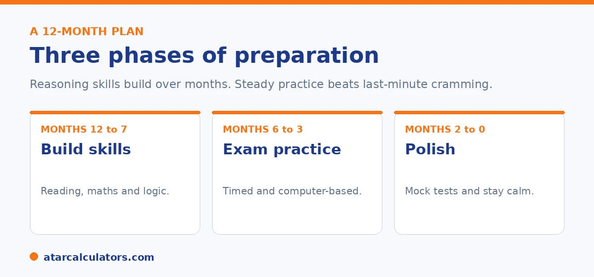

Here is the short version. Spread preparation over about a year, in three phases. For the first months, build core skills in reading, maths, and logic. In the middle, add timed, computer-based practice. In the final months, polish with full mock tests and keep things calm. Give real time to Thinking Skills and Writing, not only Reading and Maths. The Department says coaching is not necessary, so steady home practice can do the job.
Good preparation is not about doing the most. It is about doing the right things steadily, over months, so skills build without stress.
Below is a 12-month plan in three phases. To track progress with practice results, use our NSW selective calculator.
Key takeaways
- Spread preparation over about a year, in three phases.
- Build core skills first, then add exam practice.
- Give real time to Thinking Skills and Writing.
- Practise on a computer, under time limits, before the test.
- The Department says coaching is not necessary.
- Steady and calm beats long, stressful sessions.
Start with the right mindset
First, a reality check that helps. The Department says coaching is not necessary, and there is no solid evidence it secures a place. What helps is steady practice that builds genuine skills, especially the reasoning that the test rewards.

So you do not need an expensive program. You need a plan, some good materials, and consistency over a year.
Phase one: build the skills
For the first stretch, around months twelve to seven before the test, focus on building skills rather than sitting practice exams. Read widely and talk about texts to deepen comprehension. Practise mental maths and problem solving without a calculator. Start gentle logic puzzles to warm up reasoning.
This is also the time to begin Thinking Skills, since it is the least familiar section and cannot be crammed. Short, regular sessions work better than long ones.
Phase two: add exam practice
In the middle months, around six to three before the test, add structured, exam-style practice. Use up-to-date materials that match the current format, since older papers no longer fit. Begin timing sections, so your child gets used to the pace.
Crucially, practise on a computer. The test is fully on screen, and the Writing task is typed, so screen reading and keyboard fluency are real skills to build now.
Want to track practice results over time?
Try the NSW selective calculator →Phase three: polish and settle
In the final months, shift to full, timed mock tests under realistic conditions. The goal is not to learn new content but to build stamina, refine pacing, and remove any surprises about the interface.
Review every mock carefully. A wrong answer understood is worth more than ten questions raced through. Then ease off in the last week, and keep the mood calm.
Preparing for Thinking Skills
Thinking Skills deserves special mention, because most students have never seen questions like it. It tests logic, argument analysis, and pattern reasoning, none of which the standard curriculum teaches directly.
It also cannot be crammed, which is why it belongs in the early phase. Regular practice with the question types, spread over months, builds the reasoning the section rewards. For how much each section counts, see our weighting guide.
Keeping it healthy
Finally, protect your child's wellbeing. Too much pressure harms both results and confidence. Keep sessions short, build in breaks and downtime, and remember that one test does not define a child.
A calm, supported child performs better than a stressed one. For the full picture of how entry works, see our guide to scores and cut-offs.
Protecting your child's wellbeing through preparation is not just kind, it is the more effective strategy. And it is worth being deliberate about. The test draws on reasoning, comprehension and problem-solving under time pressure. And those are exactly the capacities that anxiety erodes. A stressed child's working memory and concentration narrow. So excessive pressure can lower the very performance it is meant to lift. Practical habits keep preparation sustainable. Keep sessions short and regular rather than long and draining. This is because a young child learns more from focused twenty- or thirty-minute stretches than from marathon sittings. Build in genuine breaks, downtime, play and sleep. This is because rest is when learning consolidates. Watch the language you use around the test. Framing it as an opportunity to try for a place, rather than a make-or-break judgement of their worth, keeps a child motivated instead of frightened. And keep perspective yourself. This is because children absorb their parents' stress. Above all, hold on to the truth that one test does not define a child. Selective entry is one option among many, and children thrive in a wide range of schools. A child who misses out has lost nothing essential. A supported, rested, confident child who has prepared steadily will do their honest best on the day. That is all any test can ask. And that is far more likely to produce a strong result than a child worn down by pressure.
When to start, and how much
Start gently, and keep it light. Beginning some familiarisation in Year 5 is plenty. Heavy, early drilling tends to cause burnout and anxiety, which work against a young child on test day.
So aim for steady, low-pressure preparation over months, not an intense last-minute push. A calm, confident child usually performs closer to their real ability.
Preparing for the writing task
The writing section rewards clear thinking put down quickly. So practise planning and writing a short piece to a prompt within a set time. Focus on structure and ideas first, then on spelling and punctuation.
A simple routine helps: read the prompt, jot a quick plan, then write. Doing this a handful of times builds the habit far better than writing without a plan.
Building reading and reasoning
Wide reading is the strongest long-term preparation. It builds the vocabulary and comprehension that the reading and thinking-skills sections rely on. Puzzles and varied problem-solving help the reasoning sections.
So encourage reading for pleasure and a bit of playful problem-solving. These build the underlying skills, which matter more than memorising any single question type.
Building mathematical reasoning
The mathematics section rewards problem-solving, not just quick arithmetic. So practise word problems and multi-step questions, where your child has to work out what the question is really asking.
Understanding beats speed drills here. A child who can break a problem into steps will handle unfamiliar questions better than one who has only practised routine sums.
Using practice tests wisely
Timed practice tests help, but use them sparingly. A few build stamina and a feel for pacing. Piling on test after test tends to tire a child and teach little.
So the value is in review, not volume. After each practice, look at what went wrong and why. Understanding a handful of mistakes does more than racing through many more papers.
The long game beats the crash course
The strongest preparation is not a crash course in the months before the test. It is years of wide reading, curiosity and steady schoolwork, which build the underlying skills the test measures.
So if you are reading this early, the best thing you can do is nurture a child who reads widely and enjoys thinking. Short-term practice then adds familiarity on top of real, well-built skills, which is far more effective than practice alone.
Common questions
How do I prepare my child for the selective test?
Spread preparation over about a year. Build core skills in reading, maths, and logic first, then add timed, computer-based practice, and finish with full mock tests. Give real time to Thinking Skills and Writing, and keep it low pressure.
What is a good 12-month prep plan?
Three phases. For months twelve to seven, build skills. For months six to three, add exam-style, timed, computer-based practice. For the final months, polish with mock tests and settle nerves. Review every practice carefully.
How do you practise Thinking Skills?
With regular practice on the question types, spread over months, since it cannot be crammed. It tests logic, argument analysis, and pattern reasoning that the curriculum does not teach directly, so start early and keep sessions short.
How much preparation is needed?
Most families prepare steadily over six to twelve months. Quality matters more than volume, and reviewing every practice question carefully beats racing through dozens of papers. Coaching is not necessary, according to the Department.
When should we start preparing?
About a year before the test is a sensible start, which allows skills to build without stress. Reading and reasoning are long-build skills, so steady practice over time works far better than last-minute cramming.
Is coaching necessary?
No. The NSW Department of Education says coaching is not necessary and does not recommend it, and there is no solid evidence it secures a place. Consistent, well-structured home practice can do the job.
Track practice results
Enter practice section results to see a rough competitiveness guide. Free, and no signup.
Open the NSW selective calculator →Related guides
This guide is general information for parents, not formal advice. The NSW Department of Education sets the rules, and details like dates, weightings and the equity model can change. It does not publish section weightings, the score total, or school cut-off scores. So always confirm current details on the official NSW selective high schools pages. Reviewed by the ATARCalculators Editorial Team.